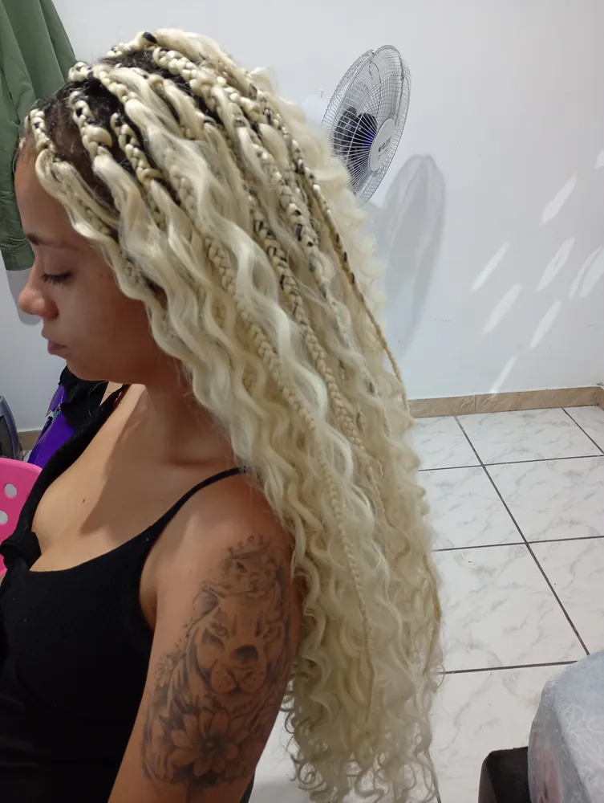
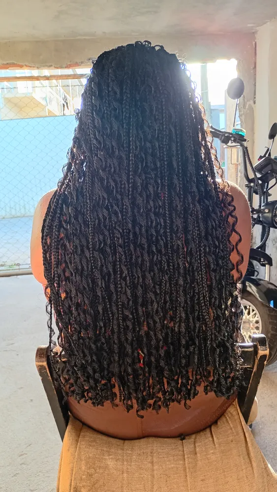
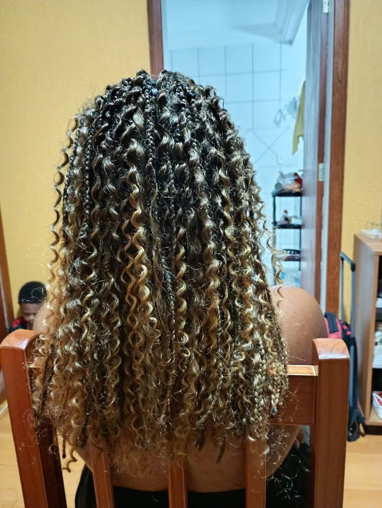
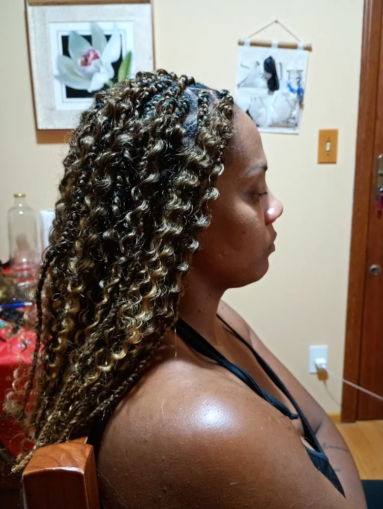
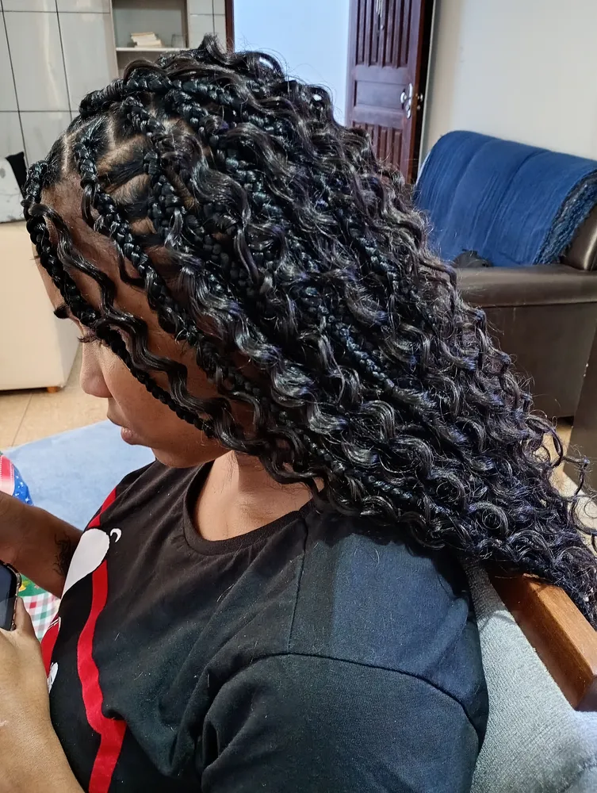
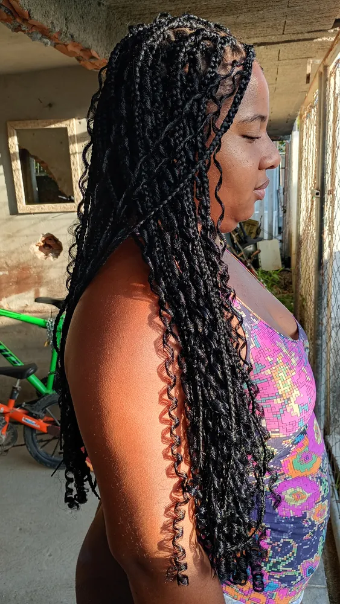
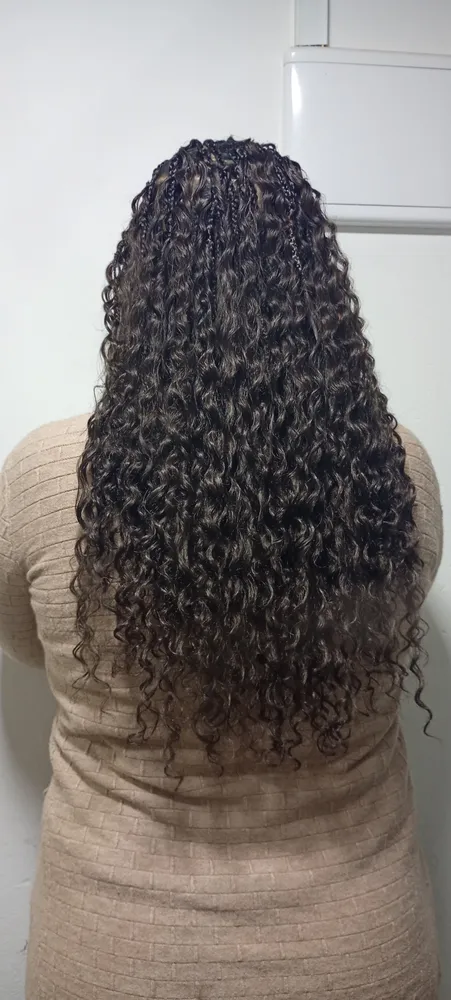

Boho braids em Florianópolis: tranças com cachos soltos
Boho braids e goddess braids em Florianópolis: tranças com mechas cacheadas escapando ao longo do comprimento, visual leve, romântico e cheio de movimento. Loiras, ombré, castanhas, pretas ou vermelhas.
- Cachos soltos
- Goddess braids
- Ombré e coloridas
- Raiz confortável


O que são boho braids
Boho braids são tranças soltas em que mechas de cabelo cacheado escapam ao longo de toda a trança, criando um visual meio desfeito de propósito, leve e natural. O nome vem do estilo boêmio, despojado.
As tranças com cachos estão entre as mais buscadas da região: "boho braids" e "tranças com cachos" somam cerca de 180 buscas por mês em Florianópolis, e o interesse cresce na primavera e no verão.
A Karol faz boho braids em vários comprimentos e cores, escolhendo com você o tipo de cacho que combina com o seu estilo.

Boho braids, goddess braids e box braids com cachos
| Estilo | Onde ficam os cachos | Visual |
|---|---|---|
| Boho braids | Ao longo de toda a trança | Solto, leve, natural |
| Goddess braids | Pontas cacheadas e volume | Marcante, volumoso |
| Box braids com cachos | Só nas pontas | Clássico com movimento |
Não sabe qual escolher?
Mande a foto do que você gosta e a Karol te ajuda.
Cores que mais saem
Loiro
Luminoso e praiano, a cara do verão em Floripa.
Ombré mel
Raiz escura clareando até cachos cor de mel.
Castanho e preto natural
Discreto e elegante, combina com qualquer ocasião.
Vermelho
Para quem quer presença. Fica lindo nas goddess braids.
Dourado
Cachos dourados volumosos, visual de festa.
Tranças com cachos feitas pela Karol
Clientes reais da Grande Florianópolis.








Como cuidar dos cachos das boho braids
Os cachos soltos são o charme das boho braids e também a parte que pede mais atenção.
- Não penteie os cachos com escova; separe com os dedos
- Use leave-in leve ou spray de água com um pouco de creme
- Durma com touca ou fronha de cetim para evitar frizz
- No mar e na piscina, enxágue com água doce depois
- Se algum cacho embolar, reative com o spray e amasse com a mão
Com esse cuidado, os cachos continuam definidos por semanas.

Como agendar suas boho braids
Mande a referência
Foto do modelo e do seu cabelo atual pelo WhatsApp.
Escolha cor e cacho
A Karol orienta o tipo de cabelo cacheado e a quantidade.
Venha com o cabelo limpo
Lavado e bem seco.
Reserve o dia
Boho braids levam algumas horas de trabalho caprichado.
Por que as boho braids viraram tendência
As boho braids ganharam o mundo nas redes sociais por um motivo simples: elas juntam a praticidade da trança com a beleza dos cachos soltos. O resultado parece natural, leve, meio despenteado de propósito, e combina com praia, festa e dia a dia.
Em Florianópolis, o estilo cai como uma luva. É uma cidade de mar, de sol e de visual despojado, e as tranças com cachos crescem em procura justamente na primavera e no verão.
Tipos de cacho para suas boho braids
Cacho aberto
Ondas largas, visual mais solto e romântico.
Cacho médio
O mais versátil, com definição e movimento.
Cacho fechado
Mais volume e textura, visual marcante.
Cacho só nas pontas
Para quem quer o toque boho de forma discreta.
Mais cachos ao longo da trança
Visual cheio, bem boho.
Menos cachos
Mais leve e fácil de manter.
Qual cacho é o seu?
Mande a referência e a Karol indica o tipo de cabelo cacheado ideal.
Boho braids ou box braids: qual escolher
| Boho braids | Box braids | |
|---|---|---|
| Visual | Solto e romântico | Clássico e alinhado |
| Manutenção | Mais cuidado com os cachos | Mais simples |
| Durabilidade dos cachos | Pede reativação com leave-in | Não se aplica |
| Ocasião | Praia, festa, dia a dia | Qualquer ocasião |
| Peso | Um pouco mais leve na aparência | Depende do comprimento |
Goddess braids: volume e presença
As goddess braids são primas das boho braids: também misturam trança e cachos, mas com o destaque nas pontas cacheadas e um volume maior. O visual é de impacto, ótimo para quem quer chamar atenção em eventos, festas ou no dia a dia mesmo.
Ficam lindas em cores marcantes, como o vermelho, e também em tons naturais com cachos volumosos. Na galeria desta página você vê goddess braids vermelhas feitas pela Karol.

Boho braids na praia: como manter os cachos bonitos
Florianópolis convida para o mar, e as boho braids aguentam bem a rotina de praia com alguns cuidados.
- Antes de entrar no mar, passe um pouco de leave-in nos cachos
- Depois, enxágue com água doce para tirar o sal
- Reative os cachos com spray de água e creme e amasse com as mãos
- Seque bem a raiz para evitar umidade presa
- Use chapéu nos dias de sol muito forte para proteger a cor

Boho braids para casamento, formatura e festas
As boho braids são uma escolha linda para eventos especiais: casamento na praia, formatura, festa de aniversário, ensaio fotográfico. Os cachos soltos dão um ar romântico e leve, e as tranças ficam perfeitas nas fotos.
Para eventos, a dica é fazer as tranças de três a sete dias antes, para a raiz assentar e os cachos ganharem movimento natural. Acessórios dourados, flores e presilhas podem entrar no dia. Converse com a Karol sobre a data com antecedência para garantir o horário.
Erros comuns com as boho braids
Pentear os cachos com escova
Desfaz a definição e cria frizz.
Usar creme pesado demais
Os cachos ficam grudados e sem movimento.
Não enxaguar depois do mar
O sal resseca os cachos.
Dormir sem touca
É o maior motivo de cachos embolados.
Arrancar o nó na força
Separe devagar com os dedos e um pouco de leave-in.
Esquecer a raiz
Ela também precisa de limpeza e secagem.
Quanto tempo levam e quanto duram as boho braids
| Item | O que esperar |
|---|---|
| Tempo de trabalho | Algumas horas, conforme comprimento e espessura |
| Duração das tranças | De 4 a 8 semanas |
| Duração da definição dos cachos | Depende dos cuidados; reativar ajuda muito |
| Quando refazer | Quando a raiz crescer ou os cachos perderem a forma |
Como usar as boho braids no dia a dia
As boho braids ficam lindas soltas, mas também aceitam vários penteados. Meio preso com os cachos caindo pelas costas, coque alto despojado com mechas escapando, rabo baixo com uma presilha dourada ou uma trança grande lateral para eventos.
Para o dia a dia, deixar a parte da frente presa com dois grampos já muda o visual e mantém o rosto livre. Para a praia, um coque alto protege os cachos do sal e do vento.
Os acessórios fazem diferença no estilo boho: anéis dourados, fios de miçanga, flores e lenços combinam muito bem com os cachos soltos.
Boho braids protegem o cabelo natural?
Assim como as box braids, as boho braids funcionam como penteado protetor: o cabelo natural fica guardado dentro das tranças, longe do calor da chapinha e da manipulação diária. Muitas clientes usam as tranças para deixar o cabelo descansar e crescer.
Para a proteção funcionar, a raiz precisa estar confortável, o couro cabeludo limpo e hidratado e o prazo de retirada respeitado.
Karoline Maia, terapeuta corporal e trancista
Karoline Maia é a fundadora da Karoline Maia Terapias e atende pessoalmente cada cliente, da massagem terapêutica, ventosa, pedras quentes e Reiki às tranças box braids e boho. Todas as fotos deste site são de atendimentos reais feitos por ela.
Atendemos com hora marcada em toda a Grande Florianópolis. Telefone e WhatsApp: (48) 99145-5759. Instagram: @karoline_maia_terapias.

Perguntas sobre boho braids
Quanto custa boho braids em Florianópolis?
Depende do comprimento, da espessura e da quantidade de cabelo cacheado. Mande a foto do modelo e receba o valor exato.
Boho braids duram quanto tempo?
Em média de 4 a 8 semanas. Os cachos soltos pedem mais cuidado para continuarem bonitos.
Posso entrar no mar com boho braids?
Pode. Depois, enxágue com água doce e reative os cachos com leave-in.
Qual a diferença entre boho e goddess braids?
Nas boho os cachos escapam ao longo de toda a trança; nas goddess o destaque são as pontas cacheadas e o volume.
O cabelo cacheado está incluso?
Isso é combinado no orçamento, junto com a cor e a quantidade.
Boho braids pesam?
Depende do comprimento e da quantidade de cachos. Em geral, parecem mais leves que box braids do mesmo tamanho por causa do visual solto.
Os cachos das boho braids embaraçam?
Podem embaraçar com atrito e sem cuidado. Touca de cetim para dormir e leave-in leve resolvem a maior parte dos casos.
Posso prender as boho braids?
Pode. Coque alto, meio preso e rabo ficam lindos com os cachos escapando.
Faz boho braids coloridas?
Sim. Loiro, mel, ombré, vermelho e outras cores. Mande a referência da cor que você quer.
Boho braids servem para quem tem cabelo liso?
Sim, o jumbo e os cachos sintéticos são presos ao cabelo natural. Mande uma foto do seu cabelo para avaliar a melhor técnica.
Com quanto tempo de antecedência devo marcar?
Quanto antes, melhor, principalmente antes do verão e de datas festivas, quando a agenda enche.
Boho braids são indicadas para o verão?
Sim, são uma das tranças mais pedidas no verão de Florianópolis. Só pedem cuidado extra com o sal e a secagem da raiz.
Posso fazer boho braids curtas?
Pode. Boho braids na altura dos ombros ficam leves, práticas e continuam com o charme dos cachos soltos.
Dá para misturar cores nas boho braids?
Dá. Mechas mais claras entre as tranças, ombré ou cachos de outra cor criam um visual iluminado.
As boho braids ficam bem em qualquer formato de rosto?
Ficam. O volume e o comprimento podem ser ajustados para valorizar o seu rosto: mais volume nas laterais, franja de cachos soltos ou comprimento mais curto. A Karol ajuda a escolher.
Atende boho braids em São José e Palhoça?
Sim, as tranças são atendidas em toda a Grande Florianópolis, incluindo São José, Palhoça e Biguaçu. Diga seu bairro e mande a foto do modelo pelo WhatsApp.
Cachos soltos, autoestima lá em cima.
Mande sua referência pelo WhatsApp.